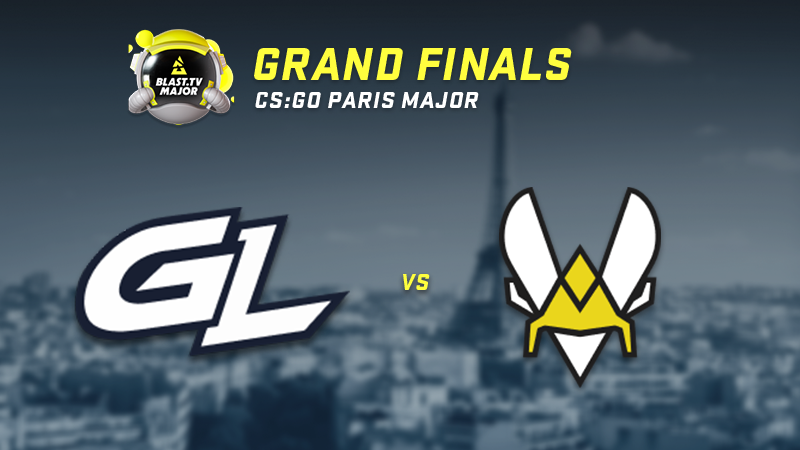

La gran Final: GamerLegion VS Team Vitality
El BLAST.tv Paris Major comenzó con 24 equipos y quedan 2 finalistas:
GamerLegion y Team Vitality. En la Fase de Campeones, GamerLegion derrotó
a Monte por 2-0 y a Heroic por 2-1 en su camino hacia las Grandes
Finales. Ante su público, Team Vitality se impuso a Into the Breach y
Apeks por 2-0 en días consecutivos. Las Grandes Finales del último Major
de CS:GO tendrán lugar mañana, 21 de mayo, desde el Accor Arena de París.
¡Buena suerte a los grandes finalistas!

Colección Anubis
Desde noviembre, los jugadores han estado asomando la cabeza en «medio» y
rusheando por las aguas de Anubis. Hoy presentamos la Colección Anubis,
que incluye 19 acabados de arma inspirados en la incorporación más
reciente a la rotación de mapas de servicio activo de Counter-Strike.

La próxima era de Counter-Strike
Counter-Strike 2 es el avance técnico más importante en la historia de
esta franquicia y nos permitirá seguir incorporando características y
actualizaciones durante muchos años. Este verano, cuando salga
oficialmente, desvelaremos todas las nuevas características del juego,
pero el camino hacia Counter-Strike 2 empieza hoy con la prueba limitada,
disponible para una selección de jugadores de CS:GO. Durante la prueba,
evaluaremos un subconjunto de características de CS2 con el fin de
resolver posibles problemas antes de su lanzamiento mundial.
Counter-Strike 2 llegará este verano como una actualización gratis de
CS:GO. Así que elige tu equipamiento, afina tus habilidades ¡y prepárate
para lo que está por llegar! Puedes obtener más información sobre las
características de la prueba limitada de CS2 aquí:
Beta de CS2